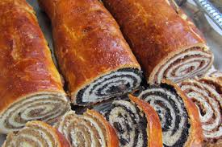

Beigli Recipe

Description
Christmas tables would not be complete without poppy seed or walnut beigli. It is often called walnut roll or poppy seed roll, both fillings are traditional and most of the time served together.
These days bakers make beiglis with new fillings, such as chesnuts, cherries, prunes or chocolate.
There is an old belief among Hungarians that poppy seeds, just like lentils, bring good luck to the house, so when consumed for Christmas or New Year’s Eve, people believed it would bring them prosperity in the new year, also, walnuts keep trouble away.
You can make your beigli on your own or buy it from your favorite bakery. The best to pre-order to make sure your Christmas table will not miss this fantastic cake.
For the dough
- 17.6 ounces all purpose flour 500 grams
- 3.5 ounces unsalted butter 100 grams
- 3.5 ounces pork lard 100 grams
- 1 teaspoon sugar
- 1/2 cup powdered sugar 50 grams
- 2 eggs
- 0.5 ounces fresh yeast 15 grams
-
- 1/2 cup whole milk
-
- 1 teaspoon vanilla extract
- 1 teaspoon lemon zest
- 1 pinch of salt
For the walnut filling
- 2 cups walnuts finely ground, 200 grams
- 1 handful walnuts coarsly chopped
- 1/2 cup milk whole
- 1 cup powdered sugar 100 grams
- 1 pinch ground cinnamon
- 2 tbsp raisins optional
- 2 tbsp apricot jam
- 1 coffeespoon lemon zest
- 1 cofeespoon orange zest
For the poppy seed filling
- 8.5 ounces poppy seeds ground, 250 grams
- 1/2 cup milk whole
- 1 cup powdered sugar
- 2 tbsp raisins optional
- 1 coffee spoon lemon zest
Steps
- Dissolve 1 teaspoon of sugar in the lukewarm milk, then add the yeast, wait a few minutes until it blooms.
- Mix the flour with the butter and lard by hand. The mixture will be quite crumbly.
- Add 2 whole eggs, the powdered sugar, pinch of salt, vanilla sugar, lemon zest and the yeast/milk mixture. Knead thoroughly. Add more flour if necessary.
- Divide the dough into 4 balls, cover and let rest for 30 minutes.
- Meanwhile, you have time to make the walnut and poppy seed filling.
- Walnut filling: In a pan heat the milk with the sugar, bring it to a boil. Take the pan off the heat, add the ground and coarsely chopped walnuts, the raisins, the lemon and orange zest, the cinnamon and the apricot jam. Mix well and let it cool completely.
- Poppy seed filling: In a pan, heat the milk with the sugar, bring it to a boil. Take the pan off the heat, add the ground poppy seeds, the raisins and the lemon zest. Mix well and let it cool completely.
- Heat the oven to 180°C (355°F). Line a pan with parchment paper.
- On a floured surface roll out each piece of the dough into a rectangle measuring about 12×14 inches (30×35 cm).
- Spread the walnut or poppy seed filling on the dough while leaving approx. 1/2 inch empty edges on each side, and roll up lengthwise. Make sure it is not too tight and not too loose. Carefully transfer the rolls onto the baking sheet.
- Egg wash: Separate the egg, set the egg whites aside. Gently whisk the egg yolk and brush the top of the 4 rolls. Let them sit in the yolk dries, it will take about half an hour or so. After the egg yolk has dried, brush on the egg white, let it dry in a cool place, if possible not in the fridge.You can leave them overnight and bake the next day.
- Prick on the top with a skewer, making sure it goes all the way through. It allows vapor to escape, which could cause the pastry to split.
- Bake the rolls for about 30-35 minutes or until golden brown. Keep the rolls in a cool and dry place and slice them only before serving.